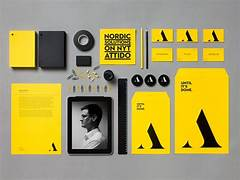
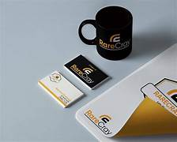
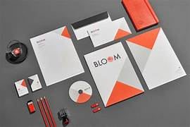

What is Branding & Graphic Design?
Branding & Graphic Design is the art of creating visual identities that represent a company's values, personality, and goals. This includes the design of logos, color schemes, typography, business cards, marketing materials, and much more to create a cohesive brand presence that resonates with customers.
My Branding & Graphic Design Process
I follow a strategic design process to ensure your brand is communicated effectively:
- Brand Discovery: Understanding your business, audience, and goals to create a design that aligns with your vision.
- Logo Design: Creating a unique and memorable logo that serves as the cornerstone of your brand identity.
- Brand Guidelines: Developing a comprehensive guide that outlines the use of logos, colors, fonts, and other visual elements to ensure consistency across all platforms.
- Marketing Materials: Designing business cards, brochures, flyers, and other promotional materials that communicate your brand message effectively.
- Feedback & Refinement: Iterating on designs based on your feedback to ensure the final product meets your expectations.
Why Choose My Branding & Graphic Design Services?
- Unique & Memorable Designs: I create distinctive visual identities that set your brand apart from the competition.
- Brand Consistency: Ensuring your brand’s visual elements are consistent across all platforms and marketing materials.
- Effective Communication: Designing graphics that not only look great but also effectively communicate your message to your target audience.
- Flexible & Scalable Designs: Creating designs that work for both digital and print, ensuring versatility across various mediums.
Recent Branding & Graphic Design Projects
Check out some of my recent branding and graphic design projects:

Project 1 - A rebranding for a local cafe, including logo, menu, and marketing materials.

Project 2 - Logo and business card design for a boutique fashion brand.

Project 3 - Brochure and flyer design for an educational institution.
Let’s create a strong visual identity for your brand! Contact me today to get started.